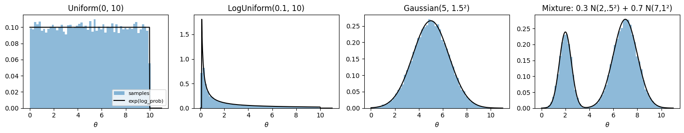
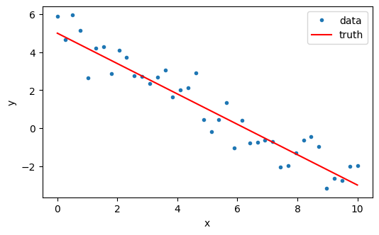
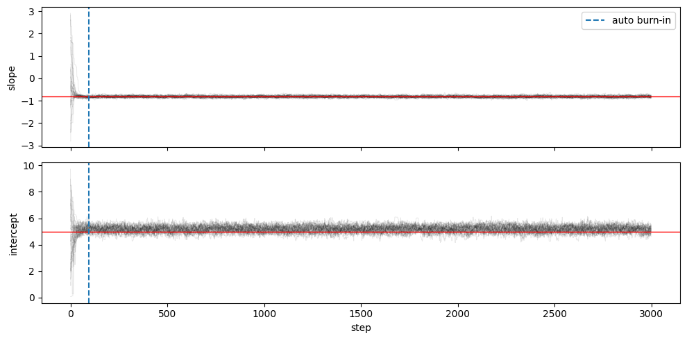
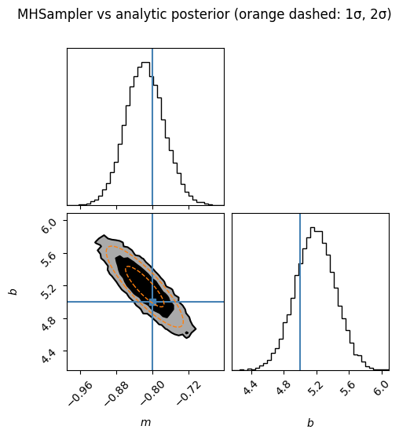
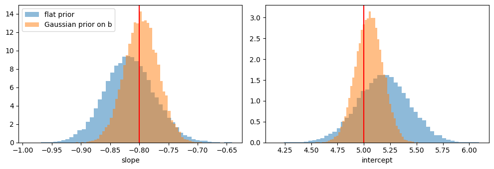

MCMC sampling and priors
This notebook covers the MCMC tools in psiphy.mcmc and the prior specifications in psiphy.utils.prior:
Priors: uniform, log-uniform, Gaussian and mixtures
Sampling a posterior with
MHSampler(emcee backend)Convergence diagnostics: traces, autocorrelation time, burn-in
Checking the result against the analytic posterior
Saving, reloading and extending a chain
Informative priors
The test problem is NoisyLine (a straight line with Gaussian noise). Its posterior is Gaussian with a closed form, so every result can be checked exactly.
Related notebooks: Nested sampling and evidence (posterior + Bayes factors), Importance sampling and SMC, Likelihood-free inference (simulator only).
[1]:
import os
import tempfile
import numpy as np
import matplotlib.pyplot as plt
from psiphy.mcmc import MHSampler
from psiphy.utils.prior import UniformPrior, LogUniformPrior, GaussianPrior, MixturePrior
from psiphy.toy_models import NoisyLine
from psiphy.plotting.diagnostics import SampledDistribution, plot_triangle
np.random.seed(42)
1 Priors
Every prior in psiphy.utils.prior shares one interface, so the same object works with MCMC, nested sampling, importance sampling/SMC and BOLFI:
Method |
Purpose |
|---|---|
|
draws, shape |
|
single point → float; batch |
|
unit cube → parameters (used by nested sampling) |
|
conversion to other libraries |
[2]:
priors = {
'Uniform(0, 10)': UniformPrior([(0, 10)]),
'LogUniform(0.1, 10)': LogUniformPrior([(0.1, 10)]),
'Gaussian(5, 1.5²)': GaussianPrior([5.0], [1.5**2]),
'Mixture: 0.3 N(2,.5²) + 0.7 N(7,1²)': MixturePrior(
[GaussianPrior([2.0], [0.25]), GaussianPrior([7.0], [1.0])], weights=[0.3, 0.7]),
}
grid = np.linspace(0.01, 11, 500)[:, None]
fig, axes = plt.subplots(1, 4, figsize=(15, 3), sharey=False)
for ax, (name, p) in zip(axes, priors.items()):
ax.hist(p.sample(20000)[:, 0], bins=60, range=(0, 11), density=True, alpha=0.5, label='samples')
ax.plot(grid[:, 0], np.exp(p.log_prob(grid)), 'k', lw=1.5, label='exp(log_prob)')
ax.set(title=name, xlabel=r'$\theta$')
axes[0].legend(fontsize=8)
plt.tight_layout()
plt.show()

Named bounds can be passed as a dict; the keys become prior.names and are picked up by the samplers. prior_transform maps uniform draws on \([0,1]^d\) to the prior, which is how nested samplers use it.
[3]:
prior = UniformPrior({'slope': (-3, 3), 'intercept': (0, 10)})
print('names :', prior.names)
print('log_prob (inside):', prior.log_prob([0.0, 5.0]))
print('log_prob (batch) :', prior.log_prob(np.array([[0.0, 5.0], [9.0, 5.0]])))
print('prior_transform :', prior.prior_transform([0.5, 0.5]))
names : ['slope', 'intercept']
log_prob (inside): -4.094344562222101
log_prob (batch) : [-4.09434456 -inf]
prior_transform : [0. 5.]
2 Problem: fitting a noisy line
Data: \(y_i = m x_i + b + \varepsilon_i\) with \(\varepsilon_i \sim \mathcal{N}(0, \sigma^2)\) and known \(\sigma\). With a flat prior the posterior on \((m, b)\) is Gaussian with covariance \(\sigma^2 (A^\top A)^{-1}\), where \(A = [x, 1]\), centred on the least-squares fit.
[4]:
line = NoisyLine(Nx=40, noise_sigma=0.8)
theta_true = np.array([-0.8, 5.0])
y_obs = line.simulate(theta_true)
def log_posterior(theta):
lp = prior.log_prob(theta)
return lp + line.log_prob(theta, y_obs) if np.isfinite(lp) else -np.inf
# analytic posterior (flat prior, posterior well inside the box)
A = np.column_stack([line.x, np.ones_like(line.x)])
post_cov = line.noise_sigma**2 * np.linalg.inv(A.T @ A)
post_mean = np.linalg.solve(A.T @ A, A.T @ y_obs)
print('analytic posterior mean:', post_mean.round(3))
print('analytic posterior std :', np.sqrt(np.diag(post_cov)).round(3))
plt.figure(figsize=(6, 3.5))
plt.plot(line.x, y_obs, '.', label='data')
plt.plot(line.x, theta_true[0] * line.x + theta_true[1], 'r-', label='truth')
plt.xlabel('x'); plt.ylabel('y'); plt.legend()
plt.show()
analytic posterior mean: [-0.816 5.188]
analytic posterior std : [0.043 0.248]

3 Running MHSampler
MHSampler wraps emcee.EnsembleSampler. Starting from a single point, the walkers are spread into a small Gaussian ball (init_scale, relative). Starting from prior draws, pass an array of shape (n_walkers, n_dim).
[5]:
sampler = MHSampler(log_posterior, n_walkers=32, param_names=prior.names)
sampler.run(prior.sample(32), n_steps=3000, progress=False)
print('chain shape (steps, walkers, dim):', sampler.get_chain().shape)
print('mean acceptance fraction :', sampler.acceptance_fraction.mean().round(3))
chain shape (steps, walkers, dim): (3000, 32, 2)
mean acceptance fraction : 0.712
4 Convergence diagnostics
Walkers start spread over the whole prior and need some steps to reach the posterior. The integrated autocorrelation time \(\tau\) measures how many steps it takes for the chain to forget its state. Common practice: discard a few \(\tau\) as burn-in and run for at least ~50 \(\tau\). discard="auto" drops \(3\,\max(\tau)\) steps.
[6]:
chain = sampler.get_chain()
tau = sampler.autocorr_time()
burn = int(3 * tau.max())
print('autocorrelation time:', tau.round(1), ' → auto burn-in =', burn, 'steps')
fig, axes = plt.subplots(2, 1, figsize=(10, 5), sharex=True)
for i, (ax, name) in enumerate(zip(axes, prior.names)):
ax.plot(chain[:, :, i], 'k', alpha=0.1, lw=0.6)
ax.axhline(theta_true[i], c='r', lw=1)
ax.axvline(burn, c='C0', ls='--', label='auto burn-in')
ax.set_ylabel(name)
axes[0].legend(loc='upper right')
axes[-1].set_xlabel('step')
plt.tight_layout()
plt.show()
autocorrelation time: [25.7 31.6] → auto burn-in = 94 steps

5 Posterior and comparison with the analytic result
[7]:
summary = sampler.summary(discard='auto')
param mean std median tau
slope -0.8164 0.04297 -0.817 25.7
intercept 5.184 0.2475 5.186 31.6
acceptance fraction = 0.712, n_samples = 92992
[8]:
samples = sampler.get_chain(flat=True, discard='auto', thin=5)
print('MCMC mean :', samples.mean(0).round(3), ' analytic:', post_mean.round(3))
print('MCMC std :', samples.std(0).round(3), ' analytic:', np.sqrt(np.diag(post_cov)).round(3))
fig = plot_triangle(samples, labels=['m', 'b'], true_values=theta_true, engine='corner',
bins=40, plot_datapoints=False, fill_contours=True, levels=(0.68, 0.95))
# overlay the analytic 1σ/2σ ellipse in the 2-D panel
ax = fig.axes[2]
vals, vecs = np.linalg.eigh(post_cov)
t = np.linspace(0, 2 * np.pi, 200)
for k in (1, 2):
ell = post_mean[:, None] + vecs @ (k * np.sqrt(vals)[:, None] * np.vstack([np.cos(t), np.sin(t)]))
ax.plot(*ell, 'C1--', lw=1)
fig.suptitle('MHSampler vs analytic posterior (orange dashed: 1σ, 2σ)', y=1.02)
plt.show()
MCMC mean : [-0.816 5.184] analytic: [-0.816 5.188]
MCMC std : [0.043 0.247] analytic: [0.043 0.248]

Why is :math:`b` not centred on the truth? The MCMC result matches the analytic posterior, and that posterior is centred on the least-squares fit to these 40 points. The noise in this particular data set moves that fit away from the true line by a fraction of a standard deviation (printed below). Every correct method follows the data; checking for bias requires many data sets — see Section 7 of the Importance sampling and SMC tutorial.
[9]:
offset = (post_mean - theta_true) / np.sqrt(np.diag(post_cov))
print('least-squares fit:', post_mean.round(3), ' truth:', theta_true, ' offset (sigma):', offset.round(2))
least-squares fit: [-0.816 5.188] truth: [-0.8 5. ] offset (sigma): [-0.38 0.76]
The same samples plug straight into the diagnostics tools (see the Plotting diagnostics tutorial) for z-scores, credible intervals and comparisons.
[10]:
dist = SampledDistribution(samples, true_values=theta_true, labels=['m', 'b'])
for name, ci in zip(prior.names, dist.credible_intervals(levels=(68, 95))):
print(f"{name:10s} median={ci['median']:.3f} 68% [{ci['lo68']:.3f}, {ci['hi68']:.3f}]")
print('z-scores:', np.round(dist.z_scores(), 2))
slope median=-0.817 68% [-0.859, -0.774]
intercept median=5.185 68% [4.941, 5.429]
z-scores: [0.38 0.75]
6 Saving, reloading and extending a chain
Pass filename= to store the chain in HDF5 (needs h5py). The file can be reloaded, and run(n_steps=...) without a starting point continues from the last state — useful for long jobs on a cluster with wall-time limits.
[11]:
tmpdir = tempfile.mkdtemp()
fn = os.path.join(tmpdir, 'line_chain.h5')
s1 = MHSampler(log_posterior, n_walkers=32, filename=fn)
s1.run(prior.sample(32), n_steps=500)
print('first job :', s1.n_steps, 'steps')
# later, e.g. in a new job:
s2 = MHSampler.load(fn, log_prob_fn=log_posterior)
s2.run(n_steps=1000)
print('after resume:', s2.n_steps, 'steps stored in', os.path.basename(fn))
first job : 500 steps
after resume: 1500 steps stored in line_chain.h5
7 Informative priors
Swapping the prior is a one-line change. A Gaussian prior on the intercept (say from an earlier measurement) tightens the intercept and, through the correlation, the slope.
[12]:
prior_inf = GaussianPrior(mean=[0.0, 5.0], cov=[10.0**2, 0.15**2], names=['slope', 'intercept'])
log_post_inf = lambda t: prior_inf.log_prob(t) + line.log_prob(t, y_obs)
s_inf = MHSampler(log_post_inf, n_walkers=32).run(prior.sample(32), n_steps=3000)
samples_inf = s_inf.get_chain(flat=True, discard='auto', thin=5)
fig, axes = plt.subplots(1, 2, figsize=(10, 3.5))
for i, (ax, name) in enumerate(zip(axes, prior.names)):
ax.hist(samples[:, i], bins=50, density=True, alpha=0.5, label='flat prior')
ax.hist(samples_inf[:, i], bins=50, density=True, alpha=0.5, label='Gaussian prior on b')
ax.axvline(theta_true[i], c='r')
ax.set_xlabel(name)
axes[0].legend()
plt.tight_layout()
plt.show()
print('std flat :', samples.std(0).round(3))
print('std informative:', samples_inf.std(0).round(3))

std flat : [0.043 0.247]
std informative: [0.029 0.128]
Summary
Task |
Code |
|---|---|
Define a prior |
|
Run MCMC |
|
Diagnose |
|
Samples |
|
Summary |
|
Checkpoint / resume |
|
Parallel evaluation: pass pool= (any object with a map method, e.g. a multiprocessing.Pool).